英雄图鉴
从角色开始读懂 Prime World。选择职责，查看全部招式、强化、两套原版天赋盘与实战思路。
六类职责是按原版机制做的分析归类；同一英雄可以承担多种职责。
64独立英雄831专属天赋128原版天赋盘
当前显示 64 位。第一次接触？先读玩法导读 · 查看职责划分依据
坦克 （8）
用承伤、控制和保护为队友争取空间。


战士 （17）
在持续交战中兼顾伤害、生存与接敌能力。

狱刃姿态取舍 · 近战持续
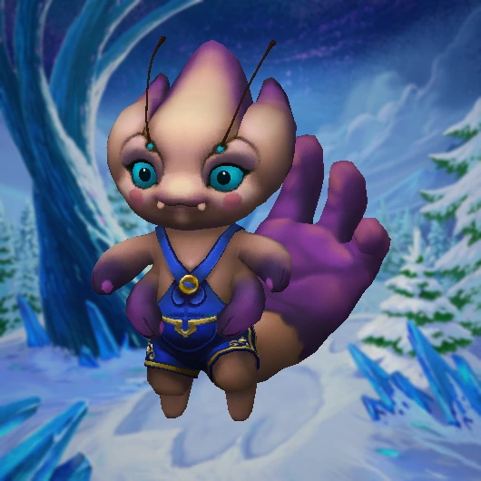
米米怒气变形 · 两套同键效果
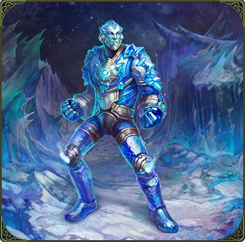
弗里兹技能普攻交替 · 短时减伤

高地人／不朽者近战吸血 · 死亡续航

狂战士旋斧吸血 · 链条牵引

卡塔娜跳斩衔接 · 短时消失

斗士／武道宗师连续命中 · 技能吸血
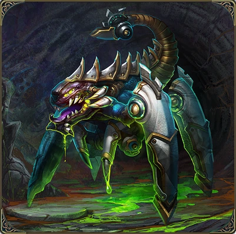
弗里尔／诺克斯外壳进场 · 返回茧

猎兵／狼舞者狼群协同 · 人数光环

夜之女王／黑豹双单位生存 · 伙伴集火
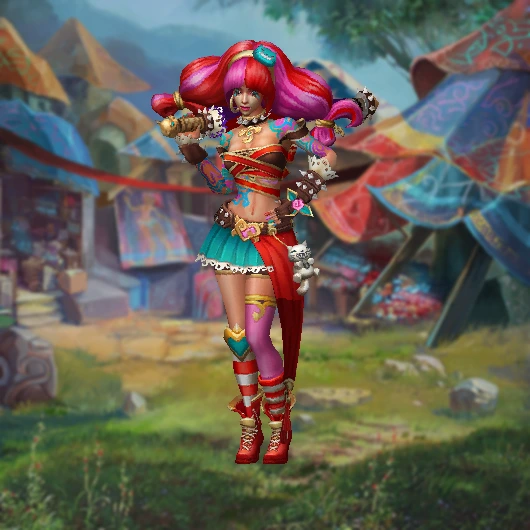
捣蛋少女技能接普攻 · 多段移动
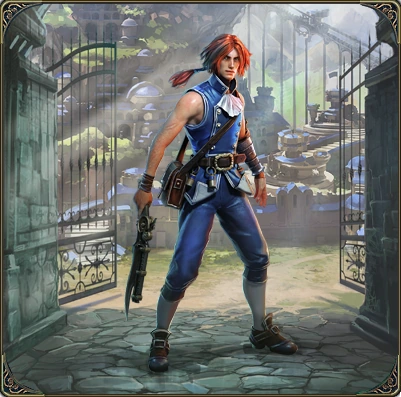
决斗家／盗贼王子攻速窗口 · 范围剑光
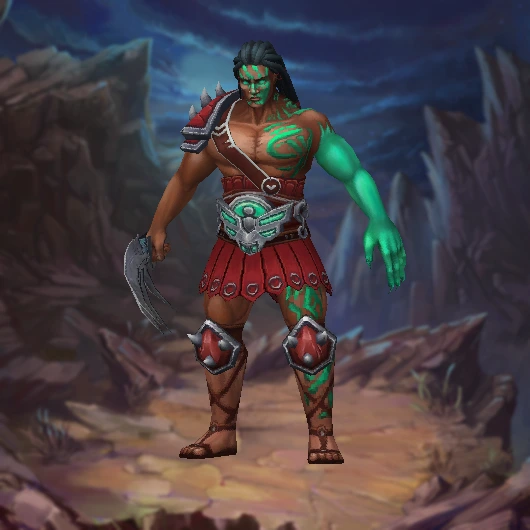
图雷胡生命施法 · 低血强化
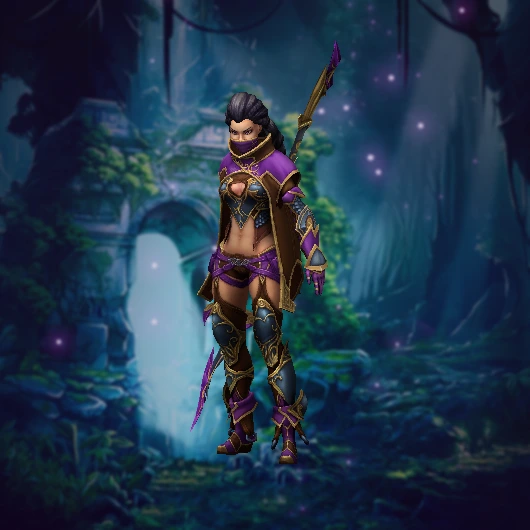
义警怒意攻防 · 记伤反击

萨满预设阵地 · 跃击近战

潜猎者远近切换 · 削防续航

獠牙／利爪伤员追击 · 再生近战
刺客 （3）
寻找切入时机，集中处理关键目标。

辅助 （10）
用保护、控制、治疗或团队增益影响战局。


法师 （17）
依靠技能组合、区域和特殊机制制造威胁。

多克特琳娜炼金准备 · 阵地限制
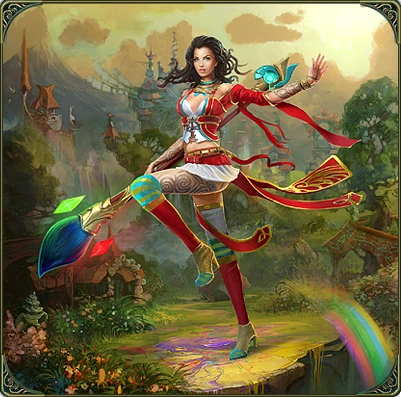
女画师颜料管理 · 攻守双用
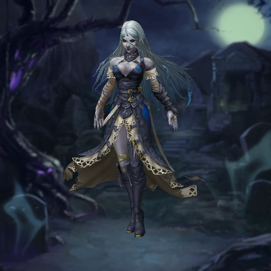
报丧女妖恢复压制 · 催眠隔离

克罗妮卡眩晕联动 · 位置回溯
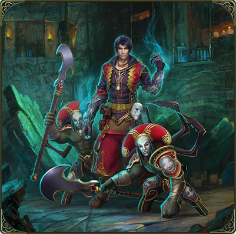
恶魔学者召唤资源 · 陷阱准备

树精孢子积累 · 侦测追踪

渡鸦首击换目标 · 延迟诅咒
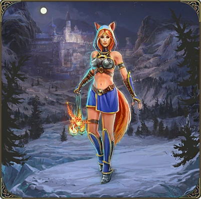
火狐／焰尾持续燃烧 · 施法恢复

发明家机关阵地 · 零件管理

法师／术士移动施法 · 延迟爆发

露娜昼夜差异 · 星门路线

奥术飞龙／魔蜓能量护盾 · 资源掠夺

瘟疫医生感染前置 · 范围干扰
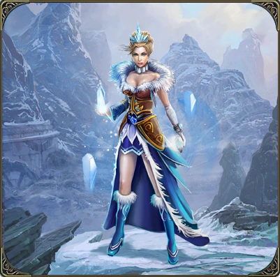
克里奥／暴风雪叠加减速 · 持续区域

雷霆大师／风暴投手连锁存量 · 普攻与雷击

吸血鬼／达哈卡生命施法 · 吸血续航
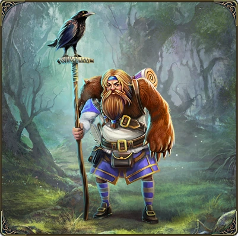
林地贤者／巫医树木条件 · 预设陷阱
射手 （9）
保持攻击距离，持续兑现普攻与射击收益。


没有符合当前条件的英雄，请调整关键词或职责筛选。